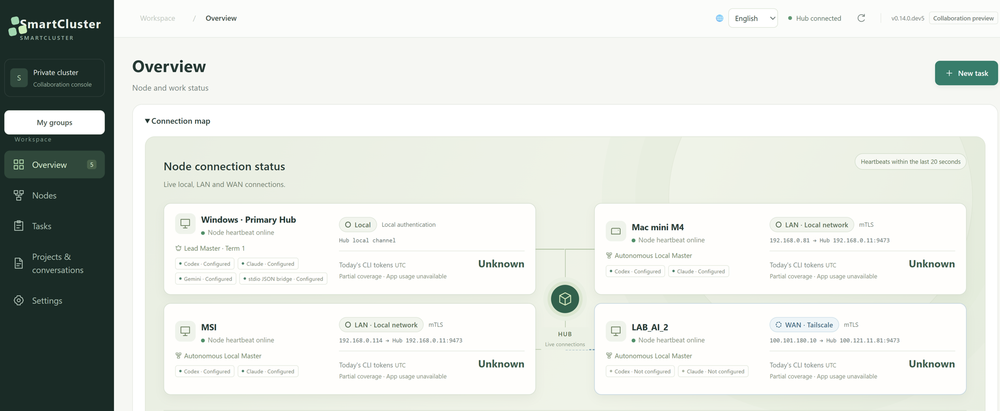
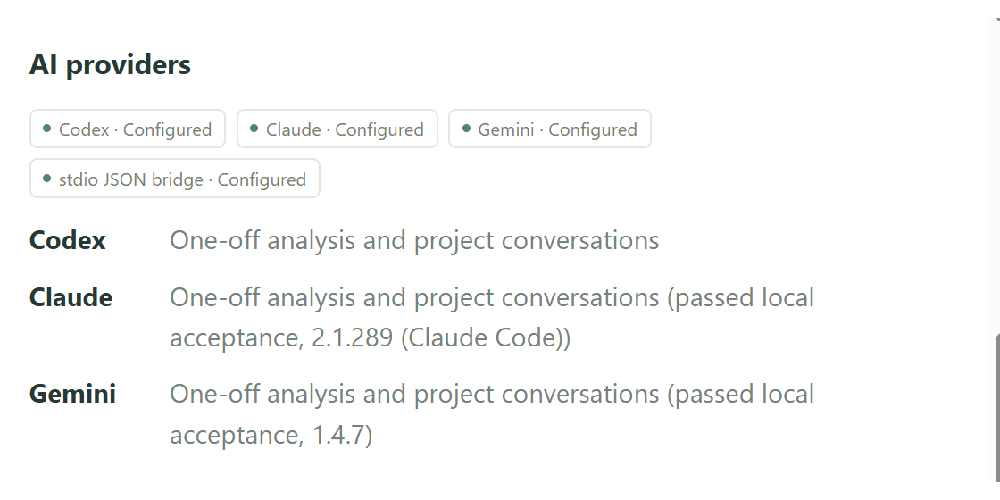

Gemini 在原生 App 修復
需求進入 Antigravity，Gemini 讀取程式、修正折扣公式、執行原有測試。原生工具與核准流程照常保留。
PRIVATE AI COLLABORATION / PREVIEW 02
Your agents. Working together.
在 Codex、Claude 或 Antigravity 裡，照原本的方式工作。需要跨 Agent、跨電腦接棒時，再用 SmartCluster 協調任務、追蹤結果。
Windows x64 候選版 · 管理與派工端 · 限邀請試用
01 / ONE TASK, A CLEAR TRAIL
你可以直接在原生 App 交辦、查看修改與執行測試，沿用 App 的模型與核准流程。SmartCluster 提供可選的協作入口：連接已授權的 Agent 與電腦，保存收件、進度與結果。
REAL APPS / ENGLISH DEMO
英文操作範例，搭配中文或英文解說。
先認識 Hub，再看 Gemini 修復、Claude 審查與成果回傳。
需求進入 Antigravity，Gemini 讀取程式、修正折扣公式、執行原有測試。原生工具與核准流程照常保留。
把同一次修改與測試證據交給 Claude 官方 CLI 審查，再回到原本的 Codex 對話驗收。SmartCluster 負責傳遞任務與回報。
Hub 使用使用者提供的真實截圖，呈現擷取當時狀態；英文修復另行實測。包含結帳頁截圖、完成後查看的原生工具紀錄及編輯成果摘要，非 Claude 桌面錄影。等待與核准畫面已剪除，旁白為神經合成。本案例只在 Primary Hub 執行，非跨機或速度驗收；示範不進行付款。
MEET YOUR HUB
真實英文 Hub 截圖，可點開放大。
Agent 照常獨立工作，需要合作時再接上。


02 / SEE THE IDEA
原創動態圖形、輕快配樂與實機紀錄摘要。
自然合成旁白（非真人錄音）＋字幕；動畫非實機錄屏。
點選章節定位，再按播放。含低音量原創配樂；不會自動出聲。
03 / FOLLOW THE WORK
選一條路徑，逐步看見交付內容。
流程示意，不連線、不提交真實任務。
04 / PROOF MATTERS
以下摘要來自 2026-10-26 的 Primary 執行節點驗收，與本頁的互動示意分開記錄。
自動收件 → 寫入檔案 → 5 項 unittest 通過 → checkpoint 與成果回報。另驗證停用、恢復及重啟後再收件。
APP JOB · 1d7e634f隔離工作樹修正 calc.py → 真實測試 exit 0 → Hub completed。原始專案保持不變。
HUB TASK · 92846552這些開發驗收使用已配置的原始碼執行節點，不代表免 Python 試用包本身能執行隔離開發。
05 / KNOW YOUR SETUP
Preview 2 · 0.14.0.dev5
Windows x64 · 未簽署候選套件
此為限邀請候選版本，免 Python 乾淨帳號及跨實體機新版驗收仍待完成。執行檔更新與回復採手動操作；未提供 macOS 執行檔。CLI 模型與桌面 App 模型分別設定。網頁資產與封裝位元組碼可讀，封裝不提供防逆向保證。Windows 原生 Computer Use 的網址辨識問題未解決，不列為本版支援能力。
查看完整版本狀態 ↗06 / YOUR FIRST MOVE
選你的目標，查看三個操作步驟。
這是操作指引，選擇不會修改設定或建立連線。
BUILD WITH A CLEAR TRAIL.
先由邀請人配置相容節點，再依指南開始第一項任務。